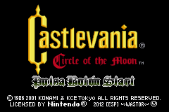
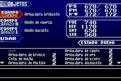
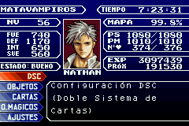
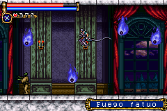

Mis proyectos
Colaboraciones
Contacto
Últimas noticias
Castlevania: Circle of the Moon
Consola:  Gameboy Advance
Gameboy Advance
 
 
Algunas impresiones personales:
Esta entrega quizás sea la más floja gráficamente de las entregas para GBA, también fue de los primeros juegos de la consola y eso se nota, pero también es cierto que después del SOTN es una vuelta a los clásicos Castlevania. Sobre todo lo que atrae es lo tremendamente difícil que es (sin chetos, obviamente) porque los puntos para salvar son poquísimos y a muchos enemigos les tienes que dar lo menos 100 latigazos para que caigan.
Gráficamente, por como está dispuesto el juego y algunos textos metidos como fuente en los objetos me recuerda a juegos como Contra y los mismos Castlevania de SNES, se nota que cambiar los hábitos al pasar a la "SNES Portable" variaron poco al principio.
Las características que puedes disfrutar en este proyecto son:
-Incluídos todos los caracteres propios del español.
-Traducción de todos los gráficos (Excepto los créditos por no merecer el esfuerzo).
-Respetada la terminología de la saga, tanto de entregas anteriores como usar los mismos nombres de entregas posteriores en NDS, etc.
-Algunos diálogos han sido reescritos y se han añadido cuadros de diálogo.
Enlace al parche:
Comentarios
Pues... ¿intentas abrir el archivo ips directamente con el emulador? Es la única explicación que se me ocurre. Lee el txt que adjunto a la traducción, te pone que necesitas una rom en concreto y aplicarle el archivo ips que contiene la traducción. Busca en google "parchear rom ips" si con el txt no te aclaras.
Saludos
También mencionas que colocaras una sección de tutoriales, los esperare con entusiasmo, de que modos aprenderé algo más.
Muchas gracias de nuevo por la traducción y sigue así.
mucho tiempo queriendo jugarlo en español y ahora gracias a tu labor es posible.
Ojala sigas dando ejemplo y te animes con otros proyectos.
Mucho animos y una vez mas gracias!
Suscripción de noticias RSS para comentarios de esta entrada.